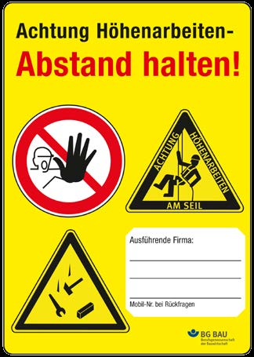

Gemäß §§ 5, 6 und 9 Betriebssicherheitsverordnung haben Arbeitgeber und Arbeitgeberinnen solche seilunterstützten Zugangs- und Positionierungsverfahren oder verwendungsfertigen Gesamtsysteme auszuwählen und den beauftragten Beschäftigten zur Verwendung bei der Arbeit bereitzustellen, die für die jeweilige Arbeitsaufgabe geeignet sind und bei deren bestimmungsgemäßer Benutzung Sicherheit und Gesundheitsschutz der Beschäftigten gewährleistet ist.
SZP darf nur eingesetzt werden, wenn den Anwendern und Anwenderinnen jederzeit gefahrlos das Einsteigen in das System bzw. das Verlassen des Systems und der Einsatzstelle möglich sind.
Zur Verringerung von Absturzgefahren beim Einstieg in das System kann z. B. die Benutzung von PSAgA erforderlich sein. Ein unplanmäßiges Verlassen des Systems bzw. der Einsatzstelle kann z. B. erforderlich sein bei Feuer, Einsturzgefahr, Überflutung oder Sauerstoffmangel.
Die Anwendung von SZP muss von fachlich geeigneten beauftragten Aufsichtführenden (siehe TRBS 2121 Teil 3 "Gefährdung von Beschäftigten durch Absturz bei der Verwendung von Zugangs- und Positionierungsverfahren unter Zuhilfenahme von Seilen" und Abschnitt 5.8) geleitet werden. Sie müssen die vorschriftsmäßige Durchführung der Arbeit gewährleisten.
Hinweis: Ein beauftragter Aufsichtführender oder eine beauftragte Aufsichtführende sollte für höchstens fünf Höhenarbeiter und Höhenarbeiterinnen verantwortlich sein (begründete Abweichungen gemäß Gefährdungsbeurteilung) und muss während des gesamten Einsatzes vor Ort sein.
Hinweis: Die Qualifizierung zur bzw. zum beauftragten Aufsichtführenden kann unter anderem mit dem Abschluss Level 3 durch z. B. FISAT, IRATA, FSBS erlangt werden. Eventuell ist eine zusätzliche Qualifizierung erforderlich (siehe Abschnitt 5.8).
Besteht ein Arbeitsteam nur aus Solo-Selbstständigen, muss eine verantwortliche Person (beauftragter Aufsichtsführender bzw. beauftragte Aufsichtsführende) bestimmt werden, die weisungsbefugt gegenüber den anderen Solo-Selbstständigen ist (siehe § 6 DGUV Vorschrift 1). Diese Befugnis beinhaltet u. a. Anweisungen zur Arbeitssicherheit und zum Gesundheitsschutz und wird zweckmäßigerweise zwischen den Beteiligten vertraglich vereinbart.
Bei der Anwendung von SZP müssen mindestens zwei Höhenarbeiter bzw. Höhenarbeiterinnen anwesend sein. Die Personen müssen Sichtkontakt oder akustischen Kontakt miteinander und mit der beauftragten aufsichtführenden Person haben. Die problemlose Verständigung (Sprache und Fachbegriffe) und die Kommunikation aller Beschäftigten untereinander sind während der Arbeiten zu gewährleisten.
Beim Auf- und Abbau des Trag- und Sicherungssystems und beim Einstieg in das Tragsystem müssen bei Absturzgefahr Maßnahmen zum Schutz gegen Absturz (z. B. Geländer, PSAgA) getroffen werden.
Einsatzplanung
Es ist eine Einsatzplanung unter Berücksichtigung der Gefährdungsbeurteilung durchzuführen, die u. a. eine detaillierte Arbeitsanweisung mit Notfall- und Rettungsmaßnahmen umfasst. Die Selbstrettung im Team muss sichergestellt sein. In der Einsatzplanung ist auf die Besonderheiten des Arbeitsumfelds einzugehen. Zu berücksichtigen ist auch eine evtl. Evakuierung, für die z. B. eine entsprechende Zeit zur Räumung des Arbeitsplatzes von den dort befindlichen Beschäftigten einzuplanen ist.
Bei der Zusammensetzung eines Teams sind ggf. unterschiedliche Qualifikationsstandards zu berücksichtigen.
Besondere Arbeits- und Rahmenbedingungen
Besondere Arbeits- und Rahmenbedingungen ergeben sich z. B. bei Hang- und Felssicherungsarbeiten, beim Befahren beengter Räume, Arbeiten über Wasser oder Offshore-Tätigkeiten. Sie erfordern neben den gängigen Kenntnissen und Fähigkeiten gegebenenfalls Zusatzqualifikationen und zusätzliche technische Maßnahmen und/oder größere Teamstärken.
Absperrung und Kennzeichnung der Arbeitsstelle
Zum Schutz gegen Gefährdungen für Dritte (z. B. durch herabfallende Gegenstände) oder durch Dritte (z. B. Manipulation der Anschlageinrichtung oder der Seilstrecke) ist eine wirksame Absperrung und eine Kennzeichnung (siehe z. B. Abbildung 15) der entsprechenden Bereiche erforderlich.

Abb. 15 Kennzeichnung der Arbeitsstelle
Bereiche, die durch Beschäftigte und Dritte nicht betreten werden dürfen, sind in der Gefährdungsbeurteilung festzulegen und zusätzlich gegen unbefugtes Betreten abzusperren.
Die Ermittlung des Radius für den Gefahrbereich zum Schutz gegen herabfallende Gegenstände erfolgt in der Gefährdungsbeurteilung. Eine Orientierung kann anhand Tabelle 1 erfolgen.
Tabelle 1 Empfohlener Radius des Gefahrenbereichs um die jeweiligen Arbeitsplätze in Abhängigkeit der Höhe des Arbeitsplatzes (siehe DGUV Information 201-055 "Feuerfest-, Turm- und Schornsteinbau")
| Höhe h der baulichen Anlage (m) | Erforderlicher Radius abhängig von h | Erforderlicher Mindestradius in m |
|---|---|---|
| h bis 60 | ||
| h > 60 bis 100 | ||
| h > 100 bis 150 | ||
| h > 150 bis 200 | ||
| h > 200 |
Zur Sicherung von Arbeitsstellen im Bereich des öffentlichen Verkehrsraums sind die Richtlinien für die Sicherung von Arbeitsstellen an Straßen (RSA) und die ASR A5.2 "Anforderungen an Arbeitsplätze und Verkehrswege auf Baustellen im Grenzbereich zum Straßenverkehr – Straßenbaustellen" zu beachten.
Gemäß den Angaben des Herstellers in der Gebrauchsanleitung hat die Unternehmerin oder der Unternehmer die Ausrüstung entsprechend den Einsatzbedingungen und den betrieblichen Verhältnissen nach Bedarf, mindestens jedoch alle 12 Monate, auf ihren einwandfreien Zustand durch eine sachkundige Person prüfen zu lassen.
Die Anwender und Anwenderinnen haben die Ausrüstung vor jeder Benutzung durch Sichtprüfung auf ihren ordnungsgemäßen Zustand und auf einwandfreies Funktionieren zu prüfen. Werden Mängel festgestellt, sind diese dem bzw. der beauftragten Aufsichtführenden zu melden, die Arbeiten sind umgehend einzustellen und die mangelhafte Ausrüstung ist der weiteren Nutzung zu entziehen. Eine sachkundige Person beurteilt den Mangel und nimmt eine Empfehlung für die weitere Benutzung vor.
Sachkundig zur Prüfung sind Personen, die an einer Qualifizierung nach DGUV Grundsatz 312-906 "Grundlagen zur Qualifizierung von Personen für die sachkundige Überprüfung und Beurteilung von persönlichen Absturzschutzausrüstungen" teilgenommen und diesen erfolgreich abgeschlossen haben.